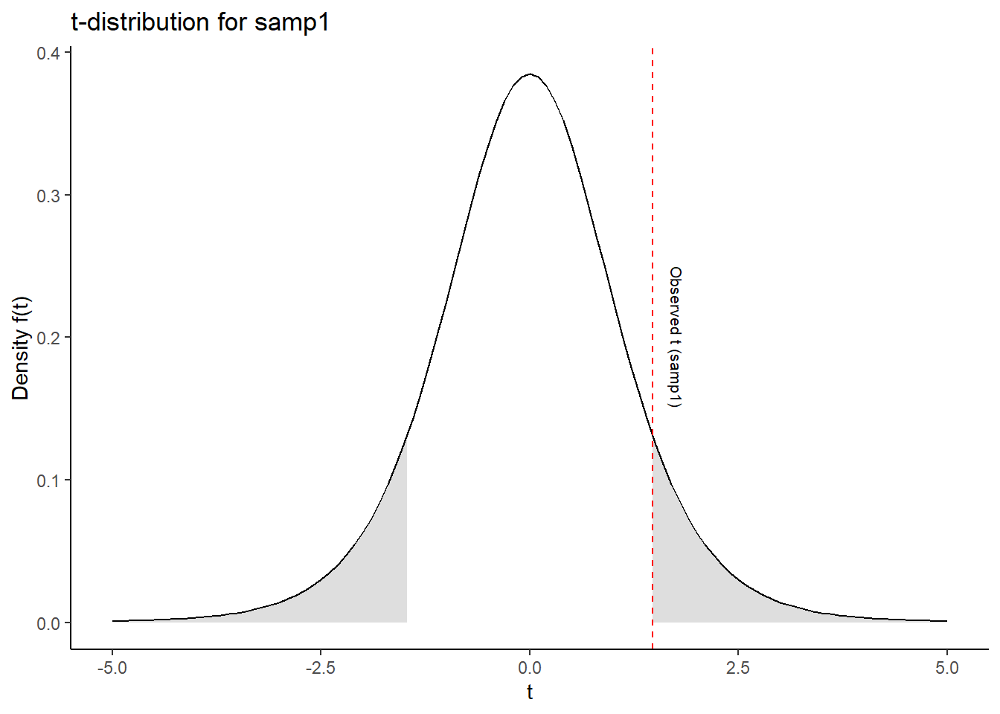
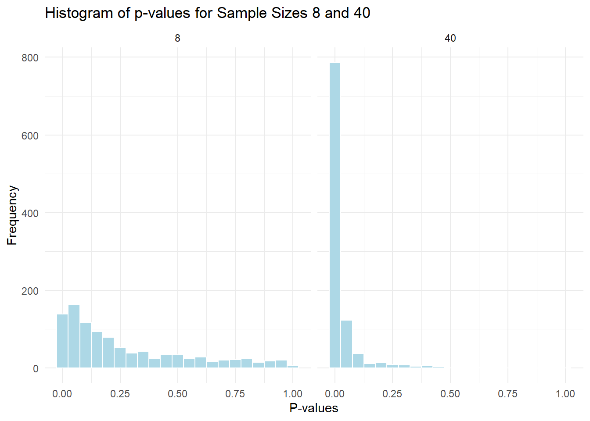
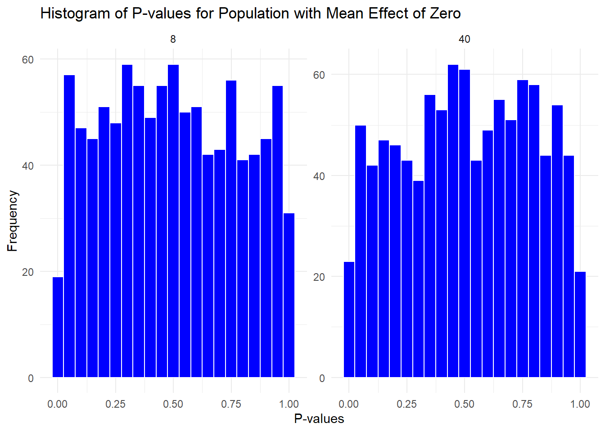

3Assignment 3: Drawing inference from statistical models, and statistical power
Author
Sivert Helland Veseth
4 Assignment 3: Drawing inference from statistical models, and statistical power
This assignment is set up as a statistical laboratory, we will perform simulations and your assignment is to interpret and explain the results. Create a report based on the code used in the lab and make sure you answer the specified questions (1-8). You can be as creative as you want and explore the results further.
4.1 Setter opp simuleringen for oppgåve 1-4
Code
# Laster inn nødvendige pakkerlibrary(tidyverse)library(gridExtra)set.seed(1) # Sikrer at alle dei tilfeldige tallene som generes er dei sammen hver gang koden kjørespopulation <-rnorm(1000000, mean =1.5, sd =3) # Generer 1 million tilfeldige verdier som er normalfordelt# Sample 1samp1 <-data.frame(y =sample(population, 8, replace =FALSE))# Sample 2samp2 <-data.frame(y =sample(population, 40, replace =FALSE))# Lager lineære modeller for hver sample med kun en konstantm1 <-lm(y ~1, data = samp1)m2 <-lm(y ~1, data = samp2)# Oppsummering av modellene summary(m1)
Call:
lm(formula = y ~ 1, data = samp1)
Residuals:
Min 1Q Median 3Q Max
-6.5322 -1.2523 -0.0883 1.3540 4.8692
Coefficients:
Estimate Std. Error t value Pr(>|t|)
(Intercept) 1.840 1.251 1.47 0.185
Residual standard error: 3.539 on 7 degrees of freedom
Code
summary(m2)
Call:
lm(formula = y ~ 1, data = samp2)
Residuals:
Min 1Q Median 3Q Max
-5.6557 -2.2883 0.2636 2.2549 6.4212
Coefficients:
Estimate Std. Error t value Pr(>|t|)
(Intercept) 1.5642 0.4774 3.276 0.00221 **
---
Signif. codes: 0 '***' 0.001 '**' 0.01 '*' 0.05 '.' 0.1 ' ' 1
Residual standard error: 3.019 on 39 degrees of freedom
Under i Figure 4.1 vises t-fordelingen av dei ulike lineære modellene, der det skyggelagte området visualiserer sannsyligheten for å observere en t-verdi som er like ekstrem eller mer ekstrem enn den observerte t-verdien i samp1, gitt at nullhypotesen om ingen endring er sann.
Code
## Definer t-verdier for begge utvalgt_value1 <-1.47# t-verdi for samp1t_value2 <-3.276# t-verdi for samp2df1 <-7# Antall frihetsgrader for samp1 (n-1, her 8-1=7)df2 <-39# Antall frihetsgrader for samp2 (n-1, her 40-1=39)# Lag dataramme for x-verdierx_vals <-seq(-5, 5, length.out =1000)# Lag plot for samp1plot1 <-ggplot(data.frame(x = x_vals), aes(x)) +# Fyll venstre hale for samp1stat_function(fun = dt, args =list(df = df1), xlim =c(-5, -t_value1), geom ="area", fill ="gray", alpha =0.5) +# Fyll høyre hale for samp1stat_function(fun = dt, args =list(df = df1), xlim =c(t_value1, 5), geom ="area", fill ="gray", alpha =0.5) +# Tegn hele t-fordelingskurven for samp1stat_function(fun = dt, args =list(df = df1)) +# Legg til den observerte t-verdien som en vertikal linjegeom_vline(xintercept = t_value1, color ="red", linetype ="dashed") +# Annoter t-verdien for samp1annotate("text", x = t_value1 +0.3, y =0.2, label ="Observed t (samp1)", angle =-90, size =2.8) +labs(title ="t-distribution for samp1", x ="t", y ="Density f(t)") +theme_classic() +xlim(-5, 5)# Print plot1print(plot1)# Utregne p-verdier for m1 og m2p1 <-2*pt(t_value1, df = df1, lower.tail =FALSE)p2 <-2*pt(t_value2, df = df2, lower.tail =FALSE)

Figur 1: t-fordeling av samp1
4.1.1 Spm 1: Explain the estimate, SE, t-value, and p-value from the regression models that we created previously (m1 and m2).
Estimate: Den estimerte koeffisienten representerer i regresjonsanalyser med to variabler kor mykje vi kan forvente at den avhengige variabelen endrer seg per endring i den uavhengie variabelen ((spieg2019?), s.275). I våre “intercept-only” modeller, vil estimate derimot korrespondere til gjennomsnittet av alle verdiene i dei ulike utvalgene, og gi oss et estimat på gjennomsnittet til populasjonen.
I samp1 er utvalgets gjennomsnitt 1.84 noe som er litt ifra populasjonens faktiske gjennomsnitt på 1.5. Når vi øker størrelsen på utvalget, slik som i samp2, ser vi at gjennomsnittet nærmer seg populasjonen: samp2 = 1.564 vs \(\mu\) = 1.5.
Std.Error: Standardfeilen måler kor mykje estimate forventes å variere fra utvalg til utvalg ((spieg2019?), s.231, 403-404). Standardfeilen sier dermed kor mykje gjennomsnittet vil kunne variere fra utvalg til utvalg grunnet tilfeldig variasjon i datatene. For eksempel sier standardfeilen i m2 at gjennomsnittet vil variere med 0.4774117 for hvert utvalg. SE beregnes slik:
\[
\text{SE} = \frac{s}{\sqrt{n}}
\]
hvor:
(s ) er standardavviket til utvalget
( n ) er antall observasjoner
t-value: t-verdien, eller t-statistikk, beregnes som \(t = \frac{\text{estimate}}{\text{standard error}}\), og kan forstås som kor mange standardfeil estimatet er fra 0 ((spieg2019?), s.276-277). Den vil hjelpe oss med å avgjøre om det er fornuftig å anta at vårt gjennomsnitt er forskjellig fra 0, og om null-hypotesen burde forkastes eller godtas ((spieg2019?), s.276-277). Dess høgere t-verdien er, dess sikrere kan vi være på at estimatet vårt, her y, oppsto ved tilfeldig variasjon gitt at nullhypotesen var sann.
p-value: Gitt at vi veit t-verdien og størrelsen på utvalget, kan vi benytte oss av R til å regne ut p-verdien, (se summary() eller p1/p2 i koden over): henholdsvis 0.185 for samp1 og 0.002 for samp2.
P-verdi defineres som sannsynligheten for å få et resultat så ekstremt som det observert, viss null hypotesen er virkelig sann ((spieg2019?), s. 264). Kva terskel man setter for p-verdien vil variere basert på type studie og ønsket effekt, men historisk sett så er den p<0.05 sett på som statistisk signifikant. I vårt tilfelle er det kun m2 som gir oss en p-verdi under 0.05, og er da statistisk signifikant. Samtidig er det viktig å understreke at p-verdien ikkje sier noko om sannheten til en hypotese eller at statistisk signifikans betyr at det har praktisk eller klinisk betydening ((spieg2019?), s.297-303).
4.1.2 Spm 2: Discuss what contributes to the different results in the two studies (m1 and m2).
Det første som burde påpekes er ulik utvalgsstørrelse på dei to modellene. Ved større utvalg blir estimatene gjerne mer presise fordi tilfeldige variasjoner glattes ut. For eksempel så vil standardfeilen bli påvirket av størrelsen på utvalget, ved at et større utvalg vil føre til en lavere standardfeil (ref formelen over), som igjen kan gi en mer signifikant t-verdi og lavere p-verdi. Dette er tilfelle i modellene våre over, der m2 har et større utvalg som fører til en lavere standardfeil, mer signifikant t-verdi og lavere p-verdi sammenlignet med m1 ((spieg2019?), s.191-192).
Den lave utvalgsstørrelsen i m1 vil også føre til at tilfeldige variasjoner i datane vil kunne føre til at resultatene avviker mer fra den sanne populasjonsgjennomsnittet enn m2. Forskjellen i standardfeilen mellom dei to modellene, sier at det er forskjellig spredning i observasjonene. Den økte spredningen i m1 vil bidra til mindre presise estimater, høyere p-verdi og mindre signifikante resultater ((spieg2019?), s.195).
4.1.3 Spm 3: Why do we use the shaded area in the lower and upper tail of the t-distribution (See Figure 4.1).
Dei skyggelagte områdene hjelper å visualisere kor sannsynlig eller usannsynlig den observerte t-verdien, gitt at nullhypotesen er sann (dvs. at \(\mu\) = 1.5). Ved å skyggelegge begge halene visualiseres man sannsynligheten for å få en t-verdi enten på den positive eller negative siden. Dess mindre det skyggelagte området er, desto mindre er det at vi vil observere en så ekstrem t-verdi, og desto mer sannsynlig er det at vi kan forkaste nullhypotesen.
4.2 Simulering til spørsmål 4-7
Under er en kode som lagrer resultatet fra 1000 utførte studier, for å kunne utvikle en faktisk utvalgsdistrubisjon.
Code
# Lager data frames for å lagre modell estimaterresults_8 <-data.frame(estimate =rep(NA, 1000), se =rep(NA, 1000), pval =rep(NA, 1000), n =8) results_40 <-data.frame(estimate =rep(NA, 1000), se =rep(NA, 1000), pval =rep(NA, 1000), n =40)# En løkke som for å hente ut 1000 prøver(samples), hver iterasjon (i) vil # hente ut en ny prøve fra populasjonenfor(i in1:1000) {# Henter ut en prøve samp1 <-data.frame(y =sample(population, 8, replace =FALSE)) samp2 <-data.frame(y =sample(population, 40, replace =FALSE))# Lager en lineær modell m1 <-lm(y ~1, data = samp1) m2 <-lm(y ~1, data = samp2)# Henter ut verdier fra modellen results_8[i, 1] <-coef(summary(m1))[1, 1] results_8[i, 2] <-coef(summary(m1))[1, 2] results_8[i, 3] <-coef(summary(m1))[1, 4] results_40[i, 1] <-coef(summary(m2))[1, 1] results_40[i, 2] <-coef(summary(m2))[1, 2] results_40[i, 3] <-coef(summary(m2))[1, 4]}# Lagrer resultatene i en data frameresults <-bind_rows(results_8, results_40)
Ved å bruke results datasettet, skal eg svare på følgende:
4.2.1 Spm 4: Calculate the standard deviation of the estimate variable, and the average of the se variable for each of the study sample sizes (8 and 40). Explain why these numbers are very similar. How can you define the Standard Error (SE) in light of these calculations?
I Table 4.1 er det en oppsummering av standardavviket til estimate og gjennomsnittet av se:
Code
library(knitr)# Filtrer ut resultatene for n = 8 og n = 40results_n8 <- results %>%filter(n ==8) results_n40 <- results %>%filter(n ==40)# Beregn standardavvik for estimate og gjennomsnitt for SEsummary_table <-data.frame( "Sample Size"=c(8, 40), "Standard Deviation of Estimate"=c(sd(results_n8$estimate), sd(results_n40$estimate)), "Average SE"=c(mean(results_n8$se), mean(results_n40$se)))# Print tabellen med kablekable(summary_table, caption ="Summary Statistics for Estimate and SE by Sample Size")
Tabell 1: Summary Statistics for Estimate and SE by Sample Size
Summary Statistics for Estimate and SE by Sample Size
Sample.Size
Standard.Deviation.of.Estimate
Average.SE
8
1.0708432
1.0213745
40
0.4838475
0.4696954
Standardavviket av estimatene vil fortelle hvor mykje estimatene vil variere fra prøve til prøve når vi trekker et tilfeldig utvalg av populasjonen - med andre ord vil det være den naturlige variasjonen i gjennomsnittet i utvalgene. Standardfeilen, har vi tidligere forklart, måler kor mykje vi forventer et estimat fra eit enkelt utvalg vil avvike fra det sanne gjennomsnittet av populasjonen. Begge disse målene er relatert til den variasjonen vil vi kunne se i dataene, og sier oss noko om usikkerheten rundt gjennomsnittet i utvalget.
Standardfeilen kan på mange måter ses på som eit mål for preisjonen på estimatet ((spieg2019?), s.231). I vårt tilfelle vil det si kor presist utvalgets gjennomsnitt estimerer populasjonens gjennomsnitt. Dess flere prøver man tar, vil standardfeilen nærme seg standardavviket av estimatene, fordi begge måler kor mykje estimatene varierer runndt det sanne gjennomsnittet.
4.2.2 Spm 5: Create a histogram (see example code below) of the p-values from each study sample-size. How do you interpret these histograms, what do they tell you about the effect of sample size on statistical power?
Figure 4.2 under viser fordelingen av p-verdier for n = 8 og n = 40, basert på dei 1000 prøvene som har blitt generert.
Code
results %>%ggplot(aes(pval)) +geom_histogram(binwidth =0.05, fill ="lightblue", color ="white") +# Juster binwidth hvis nødvendigfacet_wrap(~ n) +# Lager ett histogram for n = 8 og ett for n = 40labs(title ="Histogram of p-values for Sample Sizes 8 and 40",x ="P-values",y ="Frequency") +theme_minimal()

Figur 2: Histogram of p-values for Sample Sizes 8 and 40
Basert på tidligere diskusjon rundt usikkerheten og variasjon rundt estimatene, vil vi forvente å se en fordeling med flere p-verdier som er høyere enn 0.05 og dermed ikkje statistisk signifikant for n = 8. Noe som kommer tydelig frem i Figure 4.2. For n = 40 vil vi motsetning forvente at flere p-verdier som er lavere en 0.05, noe som vi også er tydelig i Figure 4.2.
Statistisk power, er beskrevet som sannsynligheten for å oppdage en sann effekt om den er tilstede ((spieg2019?), s.285). I praksis kan vi tenke på at høgere statistisk power øker sjansen til å finne signifikante resulateter når det finnes en reel effekt.
En faktor som vi så fint får visualisert i Figure 4.2, er at statistisk power avhenger av blant annet utvalgsstørrelsen. Basert på det vi observerer i histogrammet, vil vi med større sikkerhet si at vi står bedre egnet til å oppdage en sann effekt (her det sanne gjennomsnittet) ved n = 40.
4.2.3 Spm 6: Calculate the number of studies from each sample size that declare a statistical significant effect (specify a threshold for your \(\alpha\), significance level).
For at studiene fra hvert utvalg skal bli med i summeringen, må dei ha eit signifikansnivå på \(\alpha < 0.05\). Under i Table 4.2 ser man oversikten av kor mange studier fra hvert utvalgsmål som er statistiske signifikante:
Code
library(kableExtra)library(dplyr)# Beregn andelen signifikante resultatersig_table <- results %>%filter(pval <0.05) %>%group_by(n) %>%summarise(`α`=n()/1000)# Lag en tabell med kableExtrakable(sig_table, digits =3) %>%kable_styling(bootstrap_options =c("striped", "hover", "condensed"), full_width =FALSE)
Tabell 2: Proportion of Significant Results by Sample Size
n
α
8
0.227
40
0.865
4.2.4 Spm 7: Using the pwr package, calculate the power of a one-sample t-test, with a effect size of 1.5/3, your specified significance level and sample sizes 8 and 40. Explain the results in the light of your simulations.
I Table 4.3 er det vist den statistiske poweren for dei ulike utvalgsstørrelsene. Som det ble nevnt tidligere, vil en høyere power styrke sannsynlighetene for å finne en signifikant forskjell viss den eksisterer, f.eks: en statistisk power på 0.8 tilsvarer at det er 80% sannsynlighet for at vi vil oppdage en statistisk forskjell viss den eksisterer.
Code
# Laster inn pwr og knitr pakkenlibrary(pwr)library(knitr)# Beregn statistisk styrke for n = 8 og n = 40power_n8 <-pwr.t.test(n =8, sig.level =0.05, d =1.5/3, type ="one.sample")power_n40 <-pwr.t.test(n =40, sig.level =0.05, d =1.5/3, type ="one.sample")# Lag en tabell med resultatenepower_results <-data.frame("Sample Size"=c(8, 40),"Power"=c(power_n8$power, power_n40$power))# Print tabellen pent med kablekable(power_results)
Tabell 3: Statistical Power for Different Sample Sizes
Sample.Size
Power
8
0.2320770
40
0.8693981
Den lave styrken for n = 8 sammenglignet med n = 40 som vi ser i Table 4.3, henger sammen med at det var færre ikkje-signifikante tester for n = 8 versus n = 40 i Table 4.2. Gjennomgående for når vi har sammenlignet dei statistiske parametrene mellom dei ulike utvalgene, er at eit større utvalg har gitt meir presisjon. Dette samsvarer godt med den statistiske poweren også: større utvalg vil øke sannsynligheten for signifikante resultater og økt statistisk power.
4.2.5 Spm 8: With a significance level of 5%, how many studies would give you a “false positive” result if you did many repeated studies?
I koden under har eg laget et nytt datasett med resultater fra flere tilfeldige utvalg med n = 8 og n = 40, fra en populasjon med en gjennomsnittlig effekt på 0.
Code
population <-rnorm(1000000, mean =0, sd =3)# Create data frames to store the model estimatesresults_8 <-data.frame(estimate =rep(NA, 1000), se =rep(NA, 1000), pval =rep(NA, 1000), n =8) results_40 <-data.frame(estimate =rep(NA, 1000), se =rep(NA, 1000), pval =rep(NA, 1000), n =40)# A for loop used to sample 1000 studies, each iteration (i) will draw a new sample# from the population. for(i in1:1000) {# Draw a sample samp1 <-data.frame(y =sample(population, 8, replace =FALSE)) samp2 <-data.frame(y =sample(population, 40, replace =FALSE))# Model the data m1 <-lm(y ~1, data = samp1) m2 <-lm(y ~1, data = samp2)# Extract values from the models results_8[i, 1] <-coef(summary(m1))[1, 1] results_8[i, 2] <-coef(summary(m1))[1, 2] results_8[i, 3] <-coef(summary(m1))[1, 4] results_40[i, 1] <-coef(summary(m2))[1, 1] results_40[i, 2] <-coef(summary(m2))[1, 2] results_40[i, 3] <-coef(summary(m2))[1, 4]}# Save the results in a combined data frameresults_null <-bind_rows(results_8, results_40)
Videre har eg laget et histogram, Figure 4.3, for å visualisere andelen av p-verdier for dei forskjellige utvalgsstørrelsene.
Code
library(ggplot2)# Lag histogrammer av p-verdiene med fasetter for hver utvalgsstørrelseresults_null %>%ggplot(aes(pval)) +geom_histogram(binwidth =0.05, fill ="blue", color ="white") +facet_wrap(~ n, scales ="free_y") +labs(title ="Histogram of P-values for Population with Mean Effect of Zero",x ="P-values",y ="Frequency") +theme_minimal()

Figur 3: Histogram of P-values for Population with Mean Effect of Zero
Et “falskt positivt” resultat oppstår når p-verdien er mindre enn signifikansnivået (her \(\alpha < 0.05\)), selv om den sanne effekten i populasjonen er null ((spieg2019?), s.278). I Table 4.4 ser vi at selv om effekten på populasjonen er lik null, er det omtrent 5% av studiene for begge utvalgsstørrelsene som feilaktig viser en statistisk signifikant effekt. Dette demonstrer i praksis konseptet med et signifikansnivå (\(\alpha < 0.05\)), som betyr at vi tillater en 5% sjanse for å forkaste nullhypotesen når den er sann, bedre kjent som type I feil ((spieg2019?), s.283).
Code
library(knitr)# Beregn totalt antall tester og falske positivetotal_tests <-1000# Antall testerfalse_positives <- results_null %>%filter(pval <0.05) %>%group_by(n) %>%summarise("Antall falske positive"=n(), "Falske positive (%)"= (n() / total_tests) *100)# Legg til totalt antall tester for å beregne ikke-signifikante resultaterfalse_positives <- false_positives %>%mutate("Antall ikke-signifikante"= total_tests -`Antall falske positive`)# Lag en tabell med kable og norske kolonnenavnkable(false_positives, caption ="Resultater av falske positive og ikke-signifikante tester per utvalgsstørrelse", digits =2)
Tabell 4: Resultater av falske positive og ikke-signifikante tester per utvalgsstørrelse
Resultater av falske positive og ikke-signifikante tester per utvalgsstørrelse